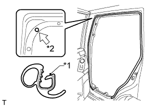

REAR AIRBAG SENSOR > INSTALLATION |
| 1. INSTALL REAR AIRBAG SENSOR LH |
Turn the engine switch off.
Disconnect the cable from the negative (-) battery terminal.
| Condition | Waiting Time |
| Vehicle enrolled in G-BOOK system | 6 minutes |
| Vehicle not enrolled in G-BOOK system | 1 minute |
Install the rear airbag sensor with the nut.
Check that the rear airbag sensor is not loose.
Connect the connector.
| 2. INSTALL DECK TRIM SIDE PANEL ASSEMBLY LH |
Connect each connector.
Attach the 3 clips and 8 claws to install the deck trim side panel.
Install the 2 bolts and 2 screws.
Install the rear No. 2 seat outer belt floor anchor with the bolt.
Install the rear No. 1 seat outer belt floor anchor with the bolt.
| 3. INSTALL ASSIST GRIP SUB-ASSEMBLY |
Install the assist grip with the 2 bolts.
| 4. INSTALL ASSIST GRIP PLUG |
Attach the 2 claws to install the assist grip plug.
| 5. INSTALL FRONT DECK SIDE TRIM COVER (w/ Tonneau Cover) |
Attach the 2 claws to install the front deck side trim cover
| 6. INSTALL NO. 1 TONNEAU COVER HOLDER CAP (w/o Tonneau Cover) |
Attach the 2 claws to install the No. 1 tonneau cover holder cap.
| 7. INSTALL NO. 1 LUGGAGE COMPARTMENT TRIM HOOK |
Insert the No. 1 luggage compartment trim hook with the hook oriented horizontally to install it.
| 8. INSTALL REAR NO. 1 SEAT OUTER LAP BELT ANCHOR COVER |
Attach the 3 claws to install the rear No. 1 seat outer lap belt anchor cover.
| 9. INSTALL TONNEAU COVER ASSEMBLY (w/ Tonneau Cover) |
Install the tonneau cover.
| 10. INSTALL REAR DOOR OPENING TRIM WEATHERSTRIP LH |
|  |
Align the paint mark on the rear door opening trim weatherstrip with the mark position on the vehicle and install the rear door opening trim weatherstrip as shown in the illustration.
| *1 | Paint Mark |
| *2 | Mark Position |
| 11. INSTALL REAR DOOR SCUFF PLATE LH |
Attach the 3 clips, 6 claws and 2 guides to install the rear door scuff plate.
| 12. INSTALL QUARTER SCUFF PLATE LH |
Install the quarter scuff plate with the 2 bolts.
| 13. INSTALL REAR NO. 1 FLOOR STEP COVER |
Attach the 2 claws to install the rear No. 1 floor step cover.
| 14. INSTALL REAR NO. 2 SEAT ASSEMBLY |
Install the rear No. 2 seat assembly (Click here).
| 15. CONNECT CABLE TO NEGATIVE BATTERY TERMINAL |
| 16. CHECK SRS WARNING LIGHT |
Check the SRS warning light (Click here).